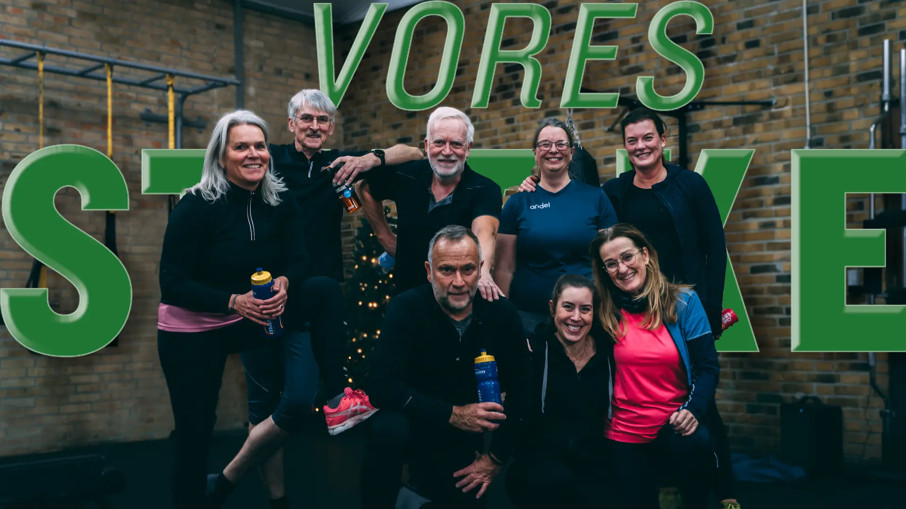
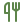

Personlig træning i din retning
Vi TilbyderKom i dit livs form
Træn med andre

personlig kostplan
Velkommen til vores styrke
Vi tilbyder individuelt tilpasset træningsforløb og kostvejledning, som 1:1 træning eller på små hold. Kontakt os for at høre nærmere om de forskellige muligheder for træning og hvad der passer bedst til dig.
Kontakt OsDet siger vores kunder
Helle Salling
Kunde
Jeg kan varmt anbefale et 6-ugers forløb hos Tina.
Tina er god til at fange sine medlemmer hvor de er, og sørge for at få presset ind til det yderste.
Tina er god at bruge til sparring med kosten, og hun er god til at lave varieret træning, så det aldrig bliver kedeligt.
Jeg har allerede efter 3 ugers forløb fået flere muskler og en mere tonet krop end jeg har haft før.
Li Holm
Kunde
Hej Tina!
Tak for de sidste 8 uger, har været så glad for at være med!
De har virkelig været igang med at sætte gang i vægttabet.
Var på vægten i morges – 8 kg siden start, og har måttet smide mine shorts ud, fordi de havde hængerøv! :D
Lene Tornbo
Kunde
Nu kan jeg godt afsløre hvad de sidste 8 uger er gået med.
Tak til Tina Fredriksen og #Voresstyrke for at få sparket mig igang.
På 8 uger har jeg tabt 6 kg og er blevet 37 cm mindre.
Og jer der har hørt på mine klager når musklerne har gjort ondt. Undskyld undskyld. Men jeg tager lige 6 uger mere fra 19.10.